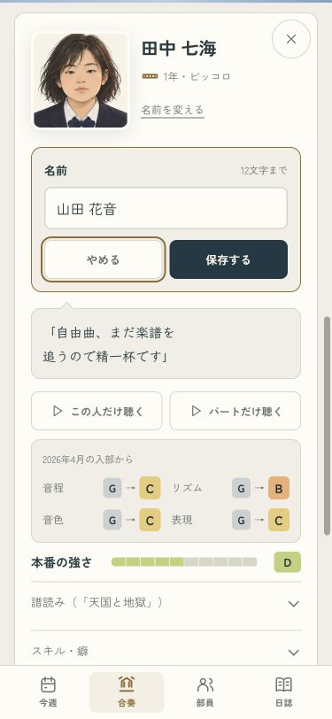
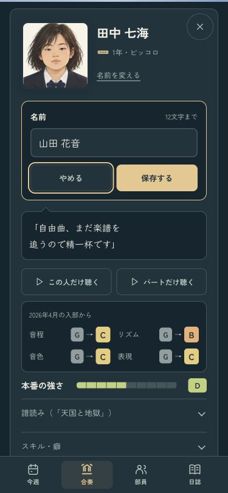
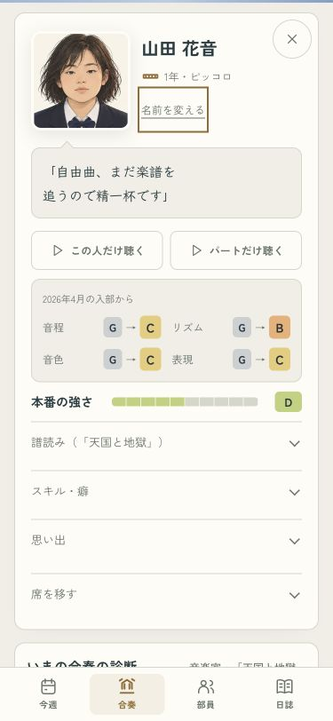
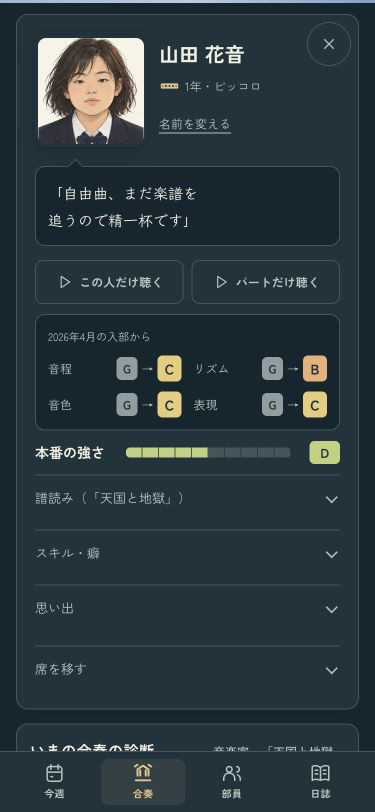

部員の名前を変える
部員カードの「名前を変える」から、12文字までで名前を付け直せます。顔や育てた力はそのまま。名簿と練習には新しい名前を使い、過去の日誌や録音は、そのときの記録として残します。
確認用の画面です。ここで名前を変えても、いつものセーブは書き換えません。
名前を入力する · 375px
名前の下から入力欄を開きます。保存前なら「やめる」やEscで元に戻せます。空欄や長すぎる名前、ほかの部員と同じ名前は、入力欄で知らせます。
ライト
ダーク
保存したあとも、同じ部員 · 375px
何度変えても本人の顔と力を保ちます。名前を保存したあとも、本人のカードを見える位置に置きます。
ライト
ダーク